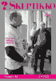
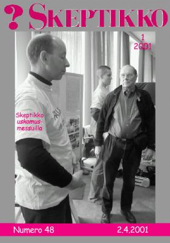
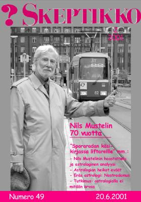
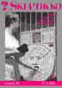
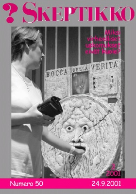

Skeptikko-lehti 2001
Ellei sinulla jo ole tietokoneellasi pdf-muodossa olevan tiedoston lukemiseen tarvittavaa
Acrobat Reader -ohjelmaa, saat sen ladattua maksutta tästä kuvakkeesta:

Skeptikko on Skepsis ry:n neljä kertaa vuodessa ilmestyvä jäsenlehti. Tästä verkkoversiosta löydät lehtien sisällysluettelon, yksittäisiä artikkeleita html-muodossa sekä kokonaiset lehdet pdf-muodossa.
  Skeptikko 48, 1/2001
- Kalle Keränen: Pääkirjoitus. Epäileminen käy työstä
- Risto K. Järvinen: Professori Juha Kere: Geeneistä ei ole tulevaisuuden ennustajiksi
- Risto K. Järvinen: Geeneillä myydään huuhaata
- Bara Normal: Höpsismin geeni löydetty
- Hannu Lauerma: Voiko poltergeist-ilmiötä järkiperäisesti tutkia?
- Pertti Kolari: Pellavansiemenvalmisteiden terveys- vai haittavaikutus
- Risto K. Järvinen: Myrsky vesilasissa
- Jukka Häkkinen: Puheenjohtajan palsta. Huuhaa-palkinnon jälkimaininkeja
- Jukka Vuori: ”Paradigma 2001” kumosi perustelut nousevien tähtimerkkien vaikutuksista
- Risto K. Järvinen: Skeptikko uskomusmessuilla
- Dariusz Leszczynski: Matkapuhelimet ja terveys
- Vesa Tenhunen: Varpumiehet innokkaina Joensuussa
- Pertti Kolari: Skeptikon Katekismus
- Anssi Saura: Keskustelua. Vastauksia tyhmiin kysymyksiin evoluutiosta
 Skeptikko 49, 2/2001
- Nils Mustelin: Pääkirjoitus. Skeptikko, maailmankuva ja mielikuvitus
- Risto K. Järvinen: ”Uskomuksiin tarttuneet ovat menetettyä viljaa”. Skeptikon haastattelema Nils Mustelin: ”Kaikkein tärkeintä on nuorten valistaminen”
- Risto K. Järvinen: Nils Mustelinin astrologinen analyysi: ”Uskot korkeampaan, mystiseen voimaan”
- Nils Mustelinin arvio analyysistä: kaikenkattava – kenelle tahansa
- Nils Mustelin: Astrologia ja sporalogia
- Alivaltiosihteeri: ”Sketsis ry”
- Lauri Gröhn: Astrologian heikot eväät
- Arno Forsius: Astrologian vaiheita
- Arno Forsius: Eräs astrologi: Nostradamus
- Hannu Karttunen: Litteää ja onttoa
- Risto K. Järvinen: Siihen aikaan kun jätesäkeistä tuli ufoja
- Angela Bourque: Astrologialla ei tutkimuksen mukaan mitään arvoa
- Risto K. Järvinen: Muinaisastronauttiteoriasta myös hyötyä
- Bara Normal kokee muutoksen
- Yhdistys toimii
  Skeptikko 50, 3/2001
- Pete Pakarinen: Pääkirjoitus. Onko peruskoulussa sijaa kriittisyydelle?
- Markku Myllykangas ja Olli-Pekka Ryynänen: Hädällä ja pelolla on helppo rahastaa. Terveyttä ei voi ostaa, vain terveyspalveluja
- Bara Normal: Suurimpien ongelmien äärellä
- Heikki Ervasti: Antroposofian pseudotieteellinen maailmankuva
- Gregory W. Lester: Miksi virheelliset uskomukset eivät kuole?
- Jukka Häkkinen: Lyhyet
- Matias Päätalo: Maailmankuvat uskon vankeina
- Jukka Häkkinen: Puheenjohtajan palsta
- Pertti Laine ja Veikko Näntö: Korvakynttilä imee ”vaikkua” jopa ilmapallon sisältä?
- Kari Mäkelä: Maasäteilyraportti jälleen saatavissa
- Tauno Puolitaival: Keskustelua. Kognitiivinen dissonanssi – vastineen vastineen vastine
- Olavi Kiviniemi: Keskustelua. Kognitiivinen dissonanssi selittää paljon
- Risto K. Järvinen: Elintarvikevirastolta uusi esite luontaistuotteista
Skeptikko 51, 4/2001
- Risto K. Järvinen: Pääkirjoitus. Vaarallisia uskomuksia
- Risto K. Järvinen: Esko Valtaoja: ”Onko maailmankaikkeudessa elämää?”
- Esko Valtaoja voitti Tieto-Finlandian
- Risto K. Järvinen: ”Ufotutkija” Lasse Ahonen: ”Joka kymmenes ufohavainto jää luonnollista selitystä vaille”
- Antti Kupiainen: Astrologia palasi Sorbonneen
- Risto K. Järvinen: Presidentit sätkynukkeina
- Huuhaa-palkinto Aamulehden liitteelle
- Sokrates-palkinto Luku-Suomi -hankkeelle
- Hiililläkävelykuvan sai julkaista
- Irwin Tessman ja Jack Tessman: Rukouksen teho. Kriittinen tarkastelu. (Skeptical Inquirer -lehden artikkeli, käännös Jouko Koppinen)
- Bara Normal: Unohdettuja tutkimusaiheita
- Risto K. Järvinen: USA:n terrori-iskut ennustettiin – jälkikäteen
- Veli Backman: Aika hyvä juttu. Kaupunkitarinat eivät kuole koskaan
- Tom Byrne ja Matthew Normand: Paholaisen riivaama virke. Reverse speech -ilmiön skeptistä tarkastelua (Skeptical Inquirer -lehden artikkeli, käännös Jouko Koppinen)
- Matias Päätalo: Pythagoras ei keksinyt omaa väittämäänsä
- Risto K. Järvinen: Uskomatonta muttei totta
Kaikkien artikkelien © Copyright 2001 Skeptikko-lehti ja kirjoittaja.
Kirjoitukset vapaasti siteerattavissa ja levitettävissä ei-kaupallisiin tarkoituksiin, lähteeksi mainittava kirjoittajan lisäksi Skeptikko-lehti numeroineen.


{kind=link}
{kind=link}
{kind=link}
{kind=link}